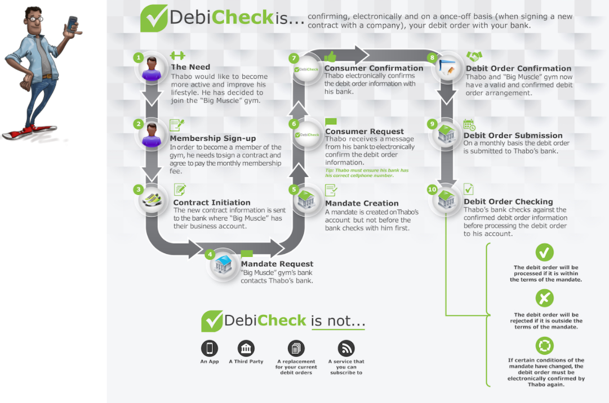

Convenience Of Debit Orders
Most South Africans agree that debit orders are a convenient way to pay their accounts, as it saves them time and having to remember to make payments, thereby giving them peace of mind.
Debit Order Abuse
Has become a major issue in South Africa
Companies
There has been bad behaviour by some companies that process invalid debit orders to consumer bank accounts.
Consumer
In addition, there are consumers that avoid paying valid debit orders by unfairly disputing these with their banks.
DebiChecks are new debit orders electronically confirmed by you with your bank on a once-off basis, relating to a new contract that you have signed with a company.
DebiCheck In Action

-
Difference between DebiCheck debit orders and other debit orders?
DebiCheck debit orders are debit orders that you will confirm, electronically and on a once off basis. Its purpose is for you to confirm the details of the debit order with your bank before it is processed to your account. Other debit orders are not confirmed electronically, Currently, banks do not have record of your debit orders and therefore cannot verify that the debit order information is correct before they process your debit order. -
How often will I need to confirm my DebiCheck debit order
You will only need to confirm your debit order information at the start of the contract. However, if the debit order information that you confirmed changes, your bank will ask you to confirm the new information. -
What do I need to do as a consumer?
For existing debit orders – nothing. For new DebiCheck debit orders, you will need to check and confirm the new debit order information in the manner requested by your bank. This could either be in person (face-to-face), using online banking or your banking app or remotely by call centre or a request sent via your mobile phone
Suspensions
Payer requests the Paying Bank to stop all future AC Debit Payment Instructions related to a specific AC mandate.
Tech, Framework and Plugins
- Easy Rules - Powerful Java rules engine
- Java Specifications - Dynamic queries
- Camel - Message-oriented middleware with a rule-based routing
- XSLT - Validation
- Jacoco - Test coverage
- Axon framework - that provides implementations of the most important building blocks to apply the CQRS architectural pattern
Functionality
- Rest, Soap, File System, Queues
- Windows - SOT, EOT
- Raise incident - Business, Technical
- Front end - Angular 2